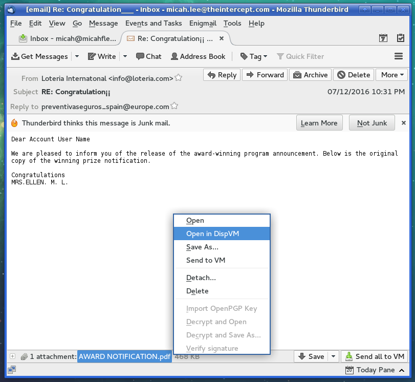
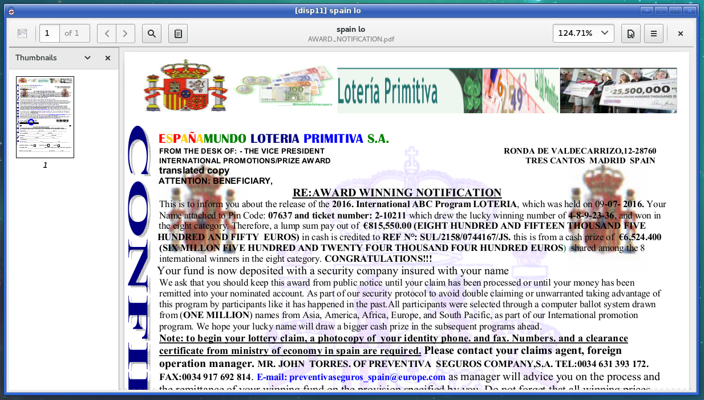

How Qubes makes handling PDFs way safer
Bart Gellman asked me on Twitter how to make PDFs safe to open. This is an excellent question, especially for a Pulitzer-winning surveillance/national security reporter who needs to open documents from random people on the internet, who may be trying to hack him or may be a valuable new source. PDFs, and all other document formats, can be terribly dangerous, and opening a malicious one can let an attacker take over your computer.
He was specifically asking if PDF Redact Tools, a tool that I developed to securely redact documents, could be used in Tails to safely sanitize potentially-malicious PDFs before opening them. Yes you can, but Qubes offers some built-in tools that do a better job of this, in a safer manner, with less hassle, and that’s quicker and easier.
The two key features are: “Open in Disposable VM” and “Convert to Trusted PDF”.
Open in Disposable VM
In Qubes, you run all of your software in VMs, and its up to the user to decide how they want to do it. I have a VM called “email” that I use to check my email, and nothing else.
Qubes comes with a Thunderbird extension that makes it simple to open email attachments in disposable VMs. It also comes with a file manager extension that lets you right-click on a file to open it in a disposable VM.
It’s absurdly easy to use. I’ll use a sketchy piece of potentially-malicious spam to demonstrate:

Notice the window decorations of my Thunderbird window. It has a blue border (because that’s the color I chose) and says “[email]” in the window, to let me know that I’m running this program in my email VM.
And here’s the window that opens:

Here’s what happened:
- Qubes created a brand new VM that doesn’t have any data in it at all
- Then it copied this file
AWARD NOTIFICATION.pdfto this new VM - Then it opened the PDF in the new VM
- When I closed the window, Qubes deleted that disposable VM
Check the window title. This PDF is open in a VM called “disp11”. When I close the window, the VM shuts down and gets deleted. If the PDF were malicious and tried to hack me, and the hack successfully exploited my PDF reader (Evince, in this case), it would still fail. The exploit wouldn’t have access to any of my data at all, and as soon as I closed the window it would be deleted forever.
There’s a setting in the Qubes Thunderbird extension to open all email attachments in disposable VMs. And this works with any type of document, not just PDFs.
Convert to Trusted PDF
Qubes also has a feature that’s similar to what Bart was wanting to use PDF Redact Tools for: to convert an unknown PDF into one that you can safely open on any computer, even one running Windows or OS X with a vulnerable version of Adobe Reader.
In this example, I’ve downloaded a PDF from Cryptome, and I have no idea if it’s malicious or not. I could choose to just open it in my PDF reader, to open it in a disposable VM, or to convert it to a PDF that I can trust.

First, notice the window decorations. This is the file manager running in my “browser” VM, and I chose the window color yellow.
Right-clicking on the PDF and choosing “Convert To Trusted PDF” does something similar to what PDF Redact Tools does, but it will do it in a more secure way, because it can, because it’s running in Qubes. The short version is this:
- Qubes creates a new disposable VM
- It copies the document
fbi-cia-ssci-saudi.pdfto it - It does a complicated process to flatten and remove anything malicious from the PDF (it does a better job than PDF Redact Tools, which simply runs the ImageMagick “convert” tool, meaning that a PDF especially crafted to attack ImageMagick rather than Adobe Reader could still hack your computer)
- It copies the trusted PDF back to the VM
- It moves the original PDF to
~/QubesUntrustedPDFsin the VM you’re using (browser, in my case), and it names the trusted PDFfbi-cia-ssci-saudi.trusted.pdf
If you want a much more detailed explanation of what’s going on, check out Joanna Rutkowska’s blog post on the topic.
There are two annoying downsides that trusted PDFs have: In order to make it safe, Qubes completely flattens the PDF, which means means you can no longer select any text from it. You’ll have to OCR it if you want the text layer back. And it makes the file size bigger, sometimes much bigger. The original fbi-cia-ssci-saudi.pdf is 624 kb, but fbi-cia-ssci-saudi.trusted.pdf is 2.3 mb.
Update: There’s a minor correction from Qubes developer Marek Marczykowski-Górecki:
“It copies the trusted PDF back to the VM” – that would mean that compromised DispVM (by the very same PDF) could pass it back unmodified instead of the sanitized one. It isn’t what is done there – it pass only very simple representation of the file (bitmap in this case), then reassemble PDF in the calling VM.
You can still get hacked with Qubes
These Qubes features are awesome and will protect you from just about 100% of random drive-by attacks. But like everything on computers, it’s still possible for an attacker with the right exploits to hack you, even if you’re using Qubes.
They would need:
- An exploit for the program you’re using to open the document. In Qubes, the default PDF reader is Evince, but you can obviously use whichever software you think is safest.
- An exploit for Xen, which is the hypervisor that Qubes uses. These exploits are rare, but certainly happen. (Like this recent incredibly scary one.)
- A payload that’s specifically targeted against Qubes.
The Qubes developers are completely on top of security updates. If you keep dom0 and all of your template VMs always up-to-date, using disposable VMs and converting to trusted PDFs will protect you from all but the most persistent and resourced attackers.


Legacy comments, imported from previous version of this blog:
a
December 3, 2016 06:49 PM
but... can you do it in tails?
Sums Up
January 3, 2017 05:55 AM
He gave the answer in this paragraph:
He was specifically asking if PDF Redact Tools, a tool that I developed to securely redact documents, could be used in Tails to safely sanitize potentially-malicious PDFs before opening them. Yes you can, but Qubes offers some built-in tools that do a better job of this, in a safer manner, with less hassle, and that’s quicker and easier.
Lettuce
July 9, 2017 04:37 PM
Dead link? "He was specifically asking if PDF Redact Tools,"
https://firstlook.org/code/project/pdf-redact-tools/
Working version:
https://code.firstlook.media/projects/pdf-redact-tools.html
Technop
January 3, 2017 06:06 AM
Can it run Crysis?
Itch
February 18, 2017 07:35 AM
With GPU passthrough (major security headache), the right hardware, compatible GPU, probably...
Anon
November 20, 2016 04:12 AM
Dear Micah Lee;
Thank you so much for maintaining and publishing these articles in this blog. They are so helpful.
Best wishes,